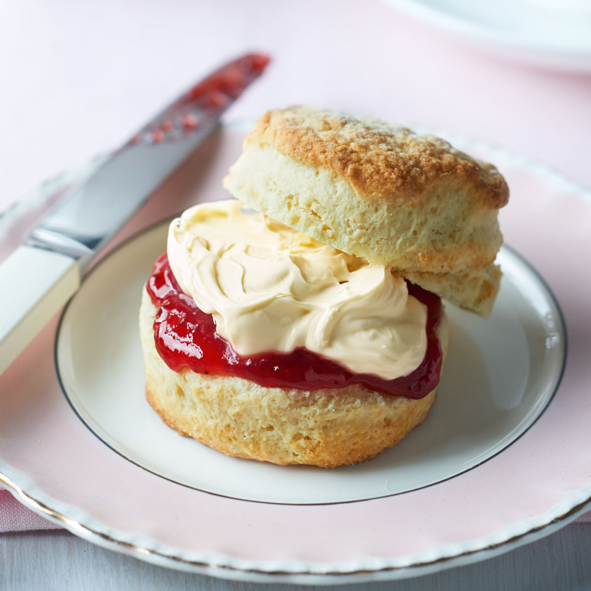
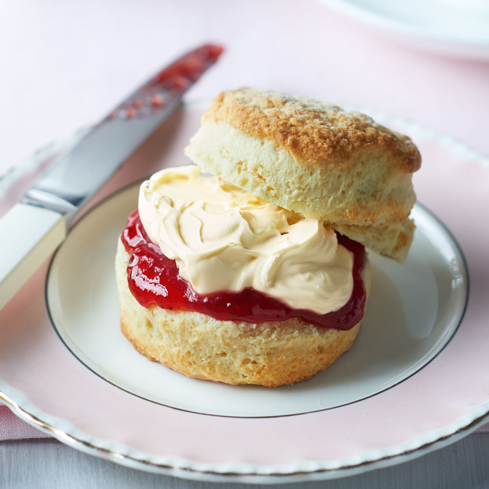

My Recipe: BBC Good Food's Buttermilk Scones

 

I like how clean and modern this website feels. The use of a limited color palette means that the full width image of the food shines. I also like the way that ingredients up top, encouraging a mise-en-place style of cooking!
I love the limited color palette with pops of yellow - it feels so fresh and vibrant. I think the font choices also lend to the playful feeling. I also like the little highlight boxes suggesting alternatives or emphasizing important steps or adding little tips.
I think adding images to the ingredients list as well as highlighting where to buy them from is a really nice touch. On a specialty recipe that's super helpful. The little video player on the side also adds additional excitement and instruction. I also like the short explanation of what the dish is and what it tastes like up top!
I like how bright and vibrant all the imagery is. Again, the limited color palette - black, white and one accent - works great to give a clean but playful energy. I think including UGC at the end also makes the vibe of the website feel more attainable.
I think the way parallax scrolling is used is so fun! I think the colors are really bold and visually exciting. I also think the way images are cropped in non-traditional shapes is also visually interesting.
I really like the fonts chosen here. The mix between ornate serifed titles and the very stripped down monospace is excellent. I also like the way gifs are used to subtly give the page some motion